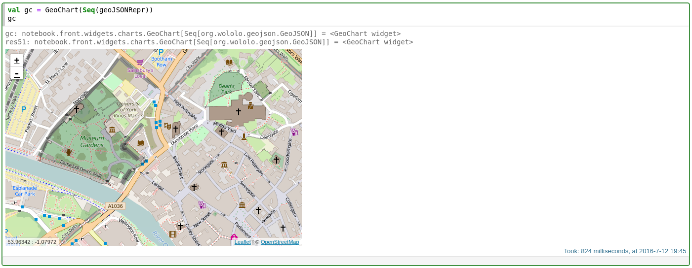

Line Chart
There're many widgets avaiable in the Spark Notebook that can be used to enrich the interaction with the data. Text-based widgets can help to sample or select data while graphical widgets will provide us data visualizations to help us build our intuition and understanding of the data.
The easiest and fastest way to visualize data in the Spark Notebook is to return collections of data from the a cell and use the built-in visualization.
The built-in visualizations will be automatically attempted on data collections of Tuples and case classes. In particular, case classes definitions may be used to populate names of axes and other values (like colors, line styles, ...).
For more advanced visualizations, the Spark Notebook comes packed with customizable charts ranging from simple line and bar charts to advanced pivot tables and geo-charts.
Charts can be reactively updated with new data through these methods:
// updates the chart with the data provided, replacing existing data, if any.
def applyOn(newData:C)
// adds new data points to the chart.
// Using resetInit=true will result in the data being replaced, like applyOn(...)
def addAndApply(otherData:C, resetInit:Boolean=false)
// changes the maximum number of data points displayed by the chart
def newMax(max:Int)A tabular visualization of the data.
case class TableChart[C:ToPoints:Sampler](
originalData:C,
filterCol:Option[Seq[String]]=None,
override val sizes:(Int, Int)=(600, 400),
maxPoints:Int = Utils.Defaults.DEFAULT_MAX_POINTS
)Table chart
case class LineChart[C:ToPoints:Sampler](
originalData:C,
fields:Option[(String, String)]=None,
override val sizes:(Int, Int)=(600, 400),
maxPoints:Int = DEFAULT_MAX_POINTS,
groupField: Option[String]=None
)Line Chart
case class ScatterChart[C:ToPoints:Sampler](
originalData:C,
fields:Option[(String, String)]=None,
override val sizes:(Int, Int)=(600, 400),
maxPoints:Int = DEFAULT_MAX_POINTS,
groupField: Option[String]=None
)
Scatter Chart
case class BarChart[C:ToPoints:Sampler](
originalData:C,
fields:Option[(String, String)]=None,
override val sizes:(Int, Int)=(600, 400),
maxPoints:Int = DEFAULT_MAX_POINTS,
groupField: Option[String]=None
)
Bar Chart
case class TimeseriesChart[C:ToPoints:Sampler](
originalData:C,
fields:Option[(String, String)]=None,
override val sizes:(Int, Int)=(600, 400),
maxPoints:Int = DEFAULT_MAX_POINTS,
groupField: Option[String]=None,
tickFormat:String = "%Y-%m-%d %H:%M:%S"
)
Timeseries Chart
case class PieChart[C:ToPoints:Sampler](
originalData:C,
fields:Option[(String, String)]=None,
override val sizes:(Int, Int)=(600, 400),
maxPoints:Int = DEFAULT_MAX_POINTS
)
Pie Chart
The Pivot chart allows to 'pivot' over a selectable data column using a number of built-in aggregations. The "show/hide" options toggles the aggregation menu. When 'off', only the resulting chart will be displayed.
case class PivotChart[C:ToPoints:Sampler](
originalData:C,
override val sizes:(Int, Int)=(600, 400),
maxPoints:Int = DEFAULT_MAX_POINTS,
derivedAttributes:JsObject=play.api.libs.json.Json.obj(),
options: Map[String, String] = Map.empty
)
pivot chart
A graph is a common way to represent data where connections between elements is important.
Graph[T]: abstract class defining a graph component with an id of type T, a value of type Any and a colorNode[T]: defines a node as a circle which can be specified a radius and its position ( xx , yy ) (initial or static if it's fixed)Edge[T]: defines an edge using the ids of both endscase class GraphChart[C:ToPoints:Sampler](
originalData:C,
override val sizes:(Int, Int)=(600, 400),
maxPoints:Int = DEFAULT_MAX_POINTS,
charge:Int= -30,
linkDistance:Int=20,
linkStrength:Double=1.0
)Graph chart
There are two types of geo charts: * GeoPointsChart for simple points lat long points * GeoChart for GeoJSON or opengis data
case class GeoPointsChart[C:ToPoints:Sampler](
originalData:C,
override val sizes:(Int, Int)=(600, 400),
maxPoints:Int = DEFAULT_MAX_POINTS,
latLonFields:Option[(String, String)]=None,
rField:Option[String]=None,
colorField:Option[String]=None
)
Geopoints chart
scala case class GeoChart[C:ToPoints:Sampler]( originalData:C, override val sizes:(Int, Int)=(600, 400), maxPoints:Int = DEFAULT_MAX_POINTS, geometryField:Option[String]=None, rField:Option[String]=None, colorField:Option[String]=None, fillColorField:Option[String]=None)  note the Museum Gardens highlighted by a polygon
Displays values across several axes. It provides a visual comparison of data points over several features at once.
case class RadarChart[C:ToPoints:Sampler](
originalData:C,
labelField:Option[String]=None,
override val sizes:(Int, Int)=(600, 400),
maxPoints:Int = DEFAULT_MAX_POINTS
)
Radar chart
Displays flows/connections among several steps
case class ParallelCoordChart[C:ToPoints:Sampler](
originalData:C,
override val sizes:(Int, Int)=(600, 400),
maxPoints:Int = DEFAULT_MAX_POINTS
)Parallel Coordinates Chart